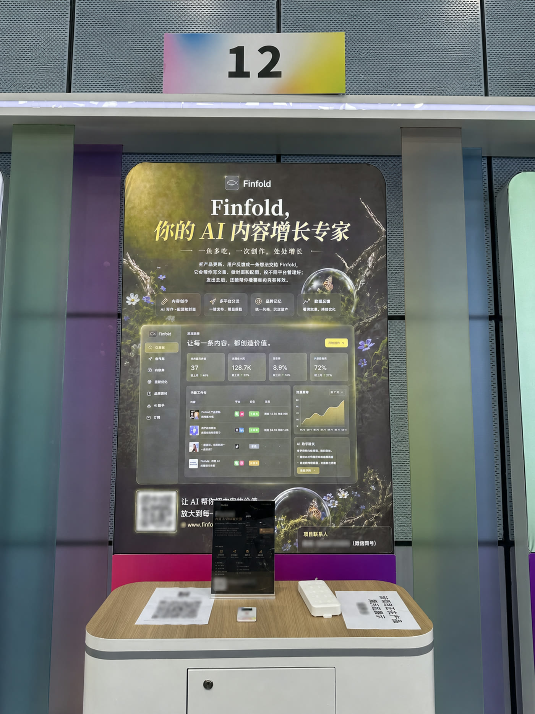
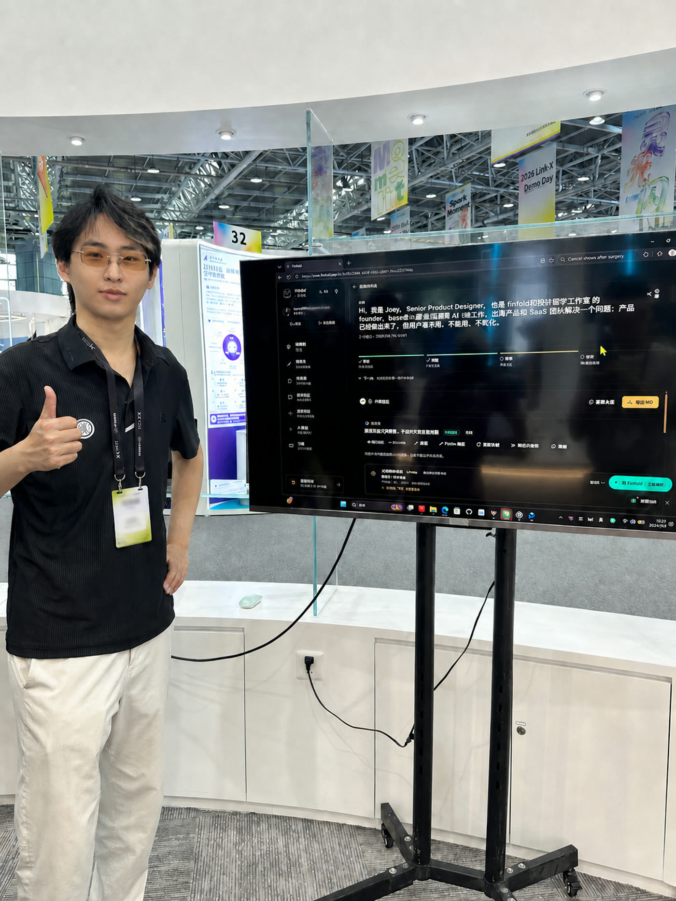

把 Finfold 带到 Link-X Demo Day 以后，我重新看了一遍这个项目。
站在大屏旁边讲产品，和坐在电脑前写 case study 很不一样。页面上的一个按钮、一个数字、一次等待，都会被放大。设计稿里的顺滑路径到了现场，只要模型慢一点、资料少一点，问题马上露出来。那天我讲的是一鱼多吃，屏幕上跑的是 Finfold。它已经能接住一条产品更新，按十四个平台的规则准备文字和视觉，也能把发布后的结果带回下一轮建议。
我更在意另一件事。面试时，面试官常会追问调研。以前这篇文章花了很多篇幅讲我怎样做界面，读完却很难回答几个基本问题。问题从哪里来，我看过哪些替代方案，研究怎样改变了产品，哪些结论仍然没有证据。产品已经走到现场，case study 也该把这些说清楚。
一条内容要进入十四个平台，设计任务落在事实、语境和状态的组织上。写得快只是其中一小段。
调研先从我自己的七次改写开始
Finfold 的起点很具体。我做完一次产品更新，想把它发到 X、小红书、公众号、LinkedIn、Reddit 和 Product Hunt。复制粘贴很快，后面的修改一点都不快。X 需要一句能让人停下来的开头，小红书要先碰到生活里的麻烦，公众号要把前因后果讲完整，Reddit 对推广口吻尤其敏感。Product Hunt 还要单独准备 tagline、简介和 Maker Comment。
我把同一条更新改了七遍。每改一遍，就记下这次改动到底在解决什么。很快能看出两类工作。产品名、价格、发布日期和能力边界必须保持一致。开头、结构、语气、图片尺寸和行动入口则要跟着平台走。通用聊天机器人能加快起草，仍然需要我反复解释产品和平台。一次发布变成七轮提示词抽卡，省下来的时间又花在检查上。
这段自我观察给了我第一个设计约束。同一批内容必须共享一组事实，每个平台又要拥有自己的版本、状态和恢复路径。只返回一大段文字，用户很难知道哪条能发，哪条还在生成，哪条引用了什么资料。
十四个平台，我研究的是任务
我随后把范围扩到十四个平台。每个平台都按同一组问题记录。用户为什么来这里发内容，第一屏承担什么任务，文字通常怎样展开，图片有哪些常用尺寸，社区对推广有什么忌讳，发布以后可以回收哪些数据。这个过程更接近 task analysis，也就是任务分析。它没有替我制造一份宏大的用户画像，却能把界面设计落到具体动作。
研究 X 时，第一行和展开节奏值得单独处理。研究小红书时，标题、封面、正文和收藏价值要一起看。公众号承担长文解释，排版和配图节奏会影响交付。Reddit、Hacker News 与 Indie Hackers 都要求创作者先贡献社区价值，品牌露出必须克制。Medium 和 Substack 更接近常青文章与订阅关系，复用方式自然也不同。
这些差异直接进入了产品。公开创作台现在支持十四个平台和九种图片尺寸，单次最多选择六个平台。这个上限也来自任务判断。一次把十四个都跑完看着厉害，等待和失败率却会一起上升。六个更接近一次真实发布批次，用户也更容易逐条检查。

替代方案拆解，让产品边界慢慢清楚
我把常见方案分成三类去看。通用聊天工具很会起草，用户每次仍要补品牌、受众和平台要求。模板生成器能把格式固定下来，碰到真实语境时很快显得僵。内容运营套件擅长日历、审批和发布，前面的创作与品牌判断往往还散在别处。
Finfold 选择把几段工作接起来。品牌记忆保存定位、受众、语气、禁用词和认可过的范文。平台规则负责生成前的约束。内容卡承接每个平台的版本与状态。封面和配图进入同一个内容包。发布数据回来以后，系统再给下一轮建议。这条路径比一个聊天框更重，产品价值也因此更明确。
研究怎样改了界面
- 发现
- 十四个平台会产生十四个独立对象，聊天时间线很难表达它们的并行状态。
- 改变
- 我把界面改成空间工作台，让素材、平台和输出同时可见。移动端再收成三步，避免信息挤在一屏。
- 发现
- 同一批内容需要共享事实，也需要保留平台自己的语气和禁忌。
- 改变
- 品牌记忆和平台规则进入生成上下文，每张卡仍能单独编辑、锁定和重试。
品牌规则要在生成前参与工作
早期版本把品牌检查放在最后。十一份内容都生成完，系统才提示语气可能不一致。提醒没有错，出现得太晚。用户已经花时间编辑，整段重来只会让人泄气。
后来我把规则移到生成之前。品牌名怎样写，哪些数据不能改，哪些词不能出现，什么语气属于这个人，都先进入上下文。生成结束以后再检查一次。规则因此从一份文档变成了可执行的记忆。广告、电商、医疗、法律和金融相关内容还需要更严格的边界，极限词、疗效承诺和收益保证会在生成阶段被拦下。

我把永远成功的假象删掉了
第一版 Dashboard 上有一组很漂亮的数字。四十二条待发布，十一条待审核，十八条已排期。它让产品看起来很成熟，来源却只是演示数据。我后来把它删了。
早期生成流程还有一层静默兜底。模型报错时，系统会塞入一份模板，让卡片继续显示成功。演示因此很顺，用户却分不清哪份内容来自模型，哪份来自缓存，哪份只是模板。一段带错事实的文案如果真的发出去，损失落在用户经营了很久的账号上。
我最后保留已经成功的结果，失败卡片单独说明原因，并提供单卡重试。公开创作台也把登录边界写在页面里。任何人可以先看完整界面，真正生成前再注册免费账户。按钮没有神秘地变灰，用户知道为什么暂时不能继续。
等待状态也跟着改了。十四个平台不可能同时秒出，每张卡会显示读取资料、应用规则、生成和检查。先完成的内容先出现，用户可以开始编辑。总时间没有被我写成一个漂亮的提升百分比，因为我没有做足以支撑那个数字的实验。我能确认的是状态变得可见，恢复路径也变得具体。
真实现场给了这个项目一层新的证据
Link-X Demo Day 没有替我证明产品已经成功。它证明了另外两件可以落地的事。我确实把一套运行中的产品带到了公开现场，也确实能站在界面旁，把研究、设计判断和实现边界讲出来。
这对作品集很重要。产品设计师常把过程写成一条过于整齐的线，研究之后得到洞察，洞察之后得到方案，方案上线后一切变好。真实项目没有这么整齐。Finfold 的很多判断来自我自己的工作，一部分来自平台任务分析，一部分来自对替代方案的拆解。公开演示能补上现场证据，仍然不能冒充规模化用户研究。


我现在能证明什么
截至 2026 年 8 月 11 日，Finfold 的公开首页、创作台和定价页可以相互对上。当前公开版本是 v0.9.0-beta.3，支持十四个平台、九种图片尺寸和品牌记忆。未登录访客可以预览完整创作台，免费账户有五十创作点数。工作台也明确提示单次最多选择六个平台，用来控制等待和部分平台的失败。
这些证据能证明产品已经上线，核心路径可以被看见，商业化方案也进入了真实页面。它们还不能证明留存、收入和增长效果。关于付费用户为什么留下、哪种内容回流真正改变下一次生成，我现在没有足够的数据。
下一轮调研会把注意力放回真实任务。我准备让创始人和一人公司带一条刚写完的产品更新来，在 Finfold 里完成素材输入、平台选择、修改、导出和发布记录。访谈之外，再加一周内容日记，看看用户回到产品时带着什么资料，在哪一步离开，哪些建议真的被采用。研究会沿着行为往下走，直到能解释留存。
看一个 AI 项目时，我会留下这四个问题
- 问题来自哪段真实工作，设计师手里有什么证据。
- 研究具体改了哪个界面、状态或产品边界。
- AI 失败时，用户看见什么，又能怎样恢复。
- 当前结论能证明到哪里，下一轮研究准备补什么。
- Finfold 完整项目案例，包含调研路径、产品判断、现场照片与当前能力边界。
- Finfold 公开官网，用于核验十四个平台、九种图片尺寸、套餐与 v0.9.0-beta.3 状态。
- Finfold 公开创作台，用于核验未登录预览、平台选择和生成前登录提示。
- 本文关于设计决策的判断来自当前产品实现与创始人自我复盘，没有把公开展示写成用户访谈。